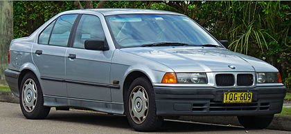

The third generation of the BMW 3 Series range of compact executive cars is designated under the model code E36, and was produced by the German automaker BMW from 1990 to 2000. The initial models were of the four-door sedan body style, followed by the coupe, convertible, wagon ("Touring"), hatchback ("Compact"), and the rare four-door convertible Baur TC4 in later years.
The E36 was the first 3 Series to be offered in a hatchback body style. It was also the first 3 Series to be available with a six-speed manual transmission (in the 1996 M3), a five-speed automatic transmission, and a four-cylinder diesel engine. The multi-link rear suspension was also a significant upgrade as compared to the previous generations of the 3 Series. Unlike the previous (E30) and successive (E46) generations, all-wheel drive was not available for the E36.
The E36 was named in Car and Driver magazine's 10Best list for every year it was on sale.
Following the introduction of its successor, the E46 3 Series in 1998, the E36 began to be phased out and was eventually replaced in 1999.